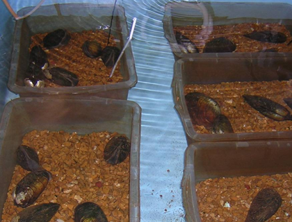

Protectiveness of Water or Sediment Quality Guidelines to Species of Special Concern
Template #147

USGS-Columbia is developing quarterly summaries for the USEPA that are intended to describe the status of activities associated with individuals tasks associated with collaborative research between USGS and USEPA to evaluate the protectiveness of water or sediment quality guidelines to species of special concern.
Work under this project is divided into the following eight tasks:
- Determining the acute and chronic toxicity of ammonia, nitrate and nitrite to amphibians
- Developing and demonstrating sediment toxicity test method with freshwater mussels for assessing sediment contaminants in the Great Lakes Basin and within North America.
- Evaluating of conditions used to culture or conduct toxicity tests with the amphipod Hyalella Azteca
- Assessing the toxicity of sulfate in water to early life stages of fish, snails, and mussels
- Improving concordance of sediment chemistry and toxicity (technical assistance to the USEPA Great Lakes National Program Office
- Water-only toxicity testing of snails and mussels
- Major ion toxicity testing with select toxicity organisms (A: Influence of water hardness on the chronic toxicity of sulfate and chloride to fathead minnows (Pimephales promelas) and cladocerans (Ceriodaphnia dubia) and B: Acute and chronic toxicity of potassium to select aquatic organisms)
- Water-only toxicity testing with sculpin and darters
This research and associated data represents collaborative efforts between USGS and other Federal agencies. The data collected promotes uniformity in collective strategies and data distribution efforts between agencies.
The key findings are task-specific as follows:
- Completed acute (96-hour) exposures to chloride (as NaCl) with both southern two-lined salamanders (Eurycea cirrigera) and mudpuppies (Necturus maculosus), indicating that later-stage larvae of these species can successfully be tested under static renewal conditions. Researchers began data summary and analysis for these tests.
- Delayed the start of sediment toxicity study planned with fatmucket, midge, and amphipods exposed to dilutions of a highly contaminated sediment collected from the East Branch of the Grand Calumet River. A complimentary study is planned comparing control responses of amphipods (4- vs. 7-day old amphipods) measuring survival, weight, biomass, or reproduction.
- A study was designed to evaluate the influence of age or feeding on amphipods in chronic water or sediment exposures with control water or with control sediment.
- Assessment of sulfate toxicity levels in water and effects on early life stages of fish, snails, and mussels has not yet begun.
- Conducted a study comparing the control response (in water or in sediment) of midge started with <1-h-old larvae compared to 4-d-old larvae. Larval survival, weight, and biomass was better with exposures started with 4-d-old larvae compared to exposures started with <1-h-old larvae. A companion study is planned with amphipods (starting with 4-d old vs. 7-d-old amphipods) evaluating survival, growth, and reproduction with different diets. Results of these studies will be used to conduct a study to evaluate the response of different life stages of amphipods or midge and mussels with exposure to dilutions of a highly contaminated and toxic sediment sample collected from the East Branch of the Grand Calumet River.
- Scientists searched Tier 1 chemical toxicity data for commonly tested amphipods, cladocerans, and snails in literature, and established a range of exposure concentrations of the Tier 1 chemicals to two commonly test organisms (Hyalella and Ceriodaphnia) and two snails.
- Scientists completed data analysis for a short-term 14-day static-renewal toxicity test with fathead minnows starting with newly fertilized eggs in three test water (CERC 100 mg/L hard water, the 100 mg/L hard water with addition of chloride to 25 mg/L, and ASTM moderately hard reconstituted water). A reconstituted water was designed to match the water quality characteristics of ASTM moderately hard water and prepared by diluting the CERC well water with deionized water, with additional K2SO4, Na2SO4, and MgSO4. This reconstituted water is planned to be used for determine why fathead minnow are sensitive to sulfate in diluted well water but not in ASTM water. The results of chemical analyses for the new water indicate the hardness, pH and major ions were close to those in the ASTM moderately hard water. Scientists completed a 90-day NaCl exposure of fatmucket.
- No toxicity testing was conducted with sculpin or darters. Task 8 work is scheduled to begin in upcoming years.
Chris Ingersoll, cingersoll@usgs.gov
573-876-1819
Ed Little, elittle@usgs.gov
573-876-1817